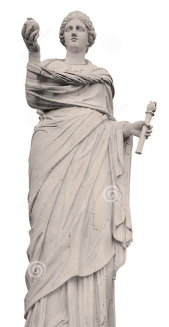
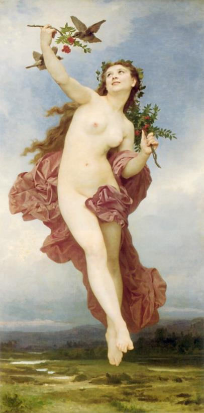
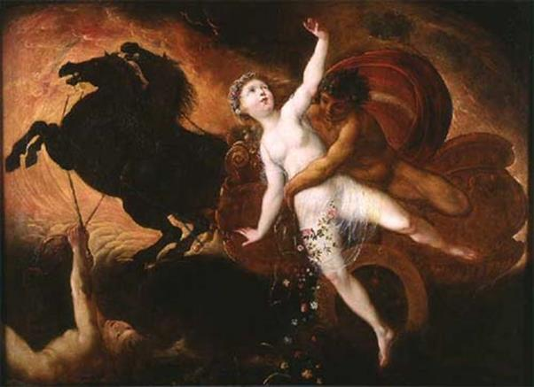
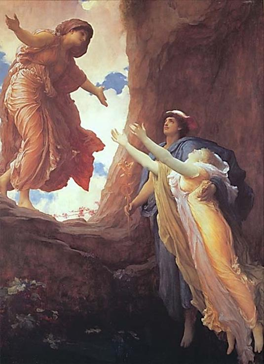
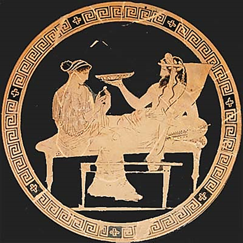

Trong thế giới thần thánh, nữ thần Déméter tuy không có sức mạnh và quyền thế lớn lao như Zeus, Héra, Poséidon, Hadès nhưng lại được người xưa hết sức trọng vọng, sùng kính. Có lẽ sau vị thần Thợ rèn-Héphaïstos thì Déméter là vị thần không gây cho người trần thế một tai họa nào mà chỉ ban cho họ biết bao nhiêu phúc lợi. Cũng phải nhắc đến nữ thần Hestia cho khỏi bất công. Nàng cũng không hề gieo một tai họa nào xuống cho những người trần thế song nàng cũng không đem lại cho họ những phúc lợi lớn lao. Nàng là vị thần của bếp lửa gia đình.

nữ thần Déméter
Déméter là con của Titan Cronos và Titan Rhéa. Nàng là một nữ thần Đất. Nàng ban cho đất đai sự phì nhiêu để mùa màng được tươi tốt, cây cối được sai quả. Vì thế Déméter thường được gọi là nữ thần Lúa mì. Hạt lúa mì từ khi gieo xuống đất, có nảy mầm được hay không, bông lúa có chắc, có mẩy không... đó là công việc do người làm ruộng cũng như nữ thần Déméter lo toan, săn sóc. Nữ thần Déméter có một người con gái duy nhất tên là Perséphone, người con gái đẹp nhất trong số các thiếu nữ con cái của các vị thần. Đó là con của Déméter với Zeus. Chuyện người con gái của Déméter là nàng Perséphone bị thần Hadès bắt cóc đưa xuống dưới âm phủ làm vợ đã gây nên bao đau khổ cho Déméter và bao rối loạn cho đời sống thiên đình và người trần thế. May thay cuối cùng nhờ đấng chí tôn, chí kính, chí công minh Zeus phân xử, cho nên mọi việc mới trở lại hài hòa, êm thấm. Chuyện xảy ra như sau:
Vào một buổi đẹp trời, nữ thần Perséphone cùng với các chị em, những tiên nữ Nymphe dạo chơi trên đồng nội. Vui chân, các nàng kéo nhau đến thung lũng Nida đầy hoa thơm cỏ lạ ở vùng Mégare. Thật ít có nơi nào lại có một khung cảnh thần tiên như nơi này: đủ các loại hoa, muôn sắc hoa đua nhau mọc, đua nhau khoe vẻ đẹp và hương thơm của mình. Từng đàn bướm trôi bồng bềnh từ cụm hoa này sang cụm hoa khác. Ong mật lớp lớp đi đi, về về trong tiếng ca yêu đời và cần mẫn. Các tiên nữ đua nhau đuổi bướm hái hoa. Nàng Perséphone, người con gái yêu dấu của nữ thần Déméter vĩ đại, say sưa vui chơi cùng chị em. Nàng có biết đâu số phận của nàng đã được Zeus định đoạt. Thần Hadès, vị thần của thế giới âm phủ, phàn nàn với Zeus về cái thế giới mình phải đảm đương, cai quản. Toàn là những bóng hình vật vờ, những linh hồn đã thoát khỏi thể xác, buồn rầu, khóc than! Biết lấy ai làm vợ? Những thiếu nữ sống trong cung điện Olympe và những vị thần sống ở trong các ngôi đền thờ của người trần thế chẳng ai muốn lấy một người chồng - dù có là một vị thần quyền thế, được cai quản cả một thế giới - quanh năm suốt đời sống ở dưới âm ty, địa ngục. Zeus quả thật trước những lời khiếu nại của người anh ruột cũng khó nghĩ. Không lo cho Hadès một người vợ để hắn yên tâm cai quản cái thế giới mà mình đã phân chia thì cũng phiền. Hắn mà bỏ đi, trở về Olympe hay lên trần sống với loài người thì đảo lộn hết mọi trật tự. Cuối cùng thần Zeus thỏa thuận với Hadès cho Hadès bắt Perséphone về làm vợ. Và sự việc đã diễn ra chỉ trong nháy mắt, bởi vì từ khi được thần Zeus ưng chuẩn, Hadès ngày đêm theo dõi từng bước đi của Perséphone. Được biết Perséphone cùng bạn bè đang say sưa vui chơi trong thung lũng đầy hoa thơm cỏ lạ, thần Hadès tức tốc đến ngay gặp nữ thần Đất-Gaia vĩ đại, xin nữ thần cho mọc lên ở chỗ Perséphone đang vui chơi một bông hoa cực kỳ đẹp đẽ và thơm ngát. Nữ thần Đất-Gaia làm theo lời thỉnh cầu của Hadès. Perséphone đang vui chơi bỗng ngửi thấy hương thơm ngào ngạt từ một cây hoa nom rất lạ, xưa nay nàng chưa từng trông thấy. Nàng đi đến gần và đưa tay ra vin cành hoa xuống ngắt. Bỗng nàng thấy người hẫng đi một cái như khi sa chân xuống một vũng lội. Thần Hadès đã làm cho đất nứt ra ở dưới chân nàng. Và nàng rơi xuống lòng đất đen trong vòng tay của Hadès. Perséphone chỉ kịp thét lên một tiếng kinh hoàng. Mặt đất nứt lại khép kín vào, lành lặn như cũ. Thần Hadès bế Perséphone lên cỗ xe ngựa của mình, cỗ xe có những con ngựa đen bóng nhưng từ bánh xe cho đến càng xe đều bằng vàng sáng chói hay bằng đồng đỏ rực. Và chỉ trong nháy mắt cỗ xe đã đưa nàng Perséphone về cung điện của thần Hadès. Thế là thần Hadès được một người vợ và nữ thần Déméter mất cô con gái yêu dấu, xinh đẹp.

Perséphone
Tiếng thét kinh hoàng của Perséphone dội vang đến tận trời cao. Ở cung điện Olympe nữ thần Déméter nghe thấy tiếng thét ấy. Cả núi cao, rừng sâu, biển rộng nhắc lại tiếng thét ấy như muốn bảo cho Déméter biết chuyện chẳng lành đã xảy ra với nàng. Nghe tiếng thét của con, Déméter rụng rời cả chân tay. Nàng vội vã rời ngay cung điện Olympe xuống trần tìm con. Như một con đại bàng, giống chim bay nhanh nhất trong các loài chim, Déméter từ trời cao lướt xuống, đi tìm con khắp mặt biển rộng, khắp mặt đất đai, khắp các ngọn núi cao, khắp các cánh rừng sâu. Nàng gọi con đến khản hơi, mất tiếng: “Per... sé... phone...!” “Per... sé... phone...!”

Hadès bắt cóc Perséphone
Nhưng đáp lại tiếng gọi của nàng chỉ là những tiếng “Per... sé... phone...!” vang vọng, buồn thảm. Déméter đi tìm con suốt chín ngày, chín đêm. Chín ngày không ăn, chín đêm không ngủ và cũng không tắm gội chải đầu, chải tóc khiến cho thân hình nàng tiều tụy, hao mòn. Chín ngày không ăn, chín đêm không ngủ, Déméter cứ đi lang thang hết nơi này đến nơi khác gọi con, kêu gào than khóc vật vã. Nàng hỏi rừng cây, rừng cây lắc đầu trả lời không biết. Nàng hỏi núi cao, núi cao cũng ngơ ngác không biết nói gì. Nàng hỏi biển khơi thì biển khơi trả lời nàng bằng những tiếng thở dài thương cảm. Còn đất đen thì im lặng nhìn nàng, thấm khô những dòng nước mắt xót xa, đau khổ của nàng đang lã chã tuôn rơi. Cả đến những tiên nữ Nymphe cùng dạo chơi với Perséphone buổi sáng đẹp trời hôm ấy cũng không biết gì hơn ngoài việc nghe thấy tiếng thét kinh hoàng của Perséphone. Chín ngày chín đêm như thế... Déméter với tấm lòng của một người mẹ chẳng quản ngại vất vả gian lao đã đi tìm đứa con gái yêu dấu, độc nhất của mình. Sang ngày thứ mười, khi cỗ xe của thần Mặt trời-Hélios đã bỏ lại sau lưng biển khơi không sinh nở, thì thần Hélios động mối từ tâm bèn gọi Déméter lại và kể cho nàng biết đầu đuôi câu chuyện vừa qua, bởi vì không có chuyện gì xảy ra ở trên mặt đất này mà không lọt vào con mắt của vị thần Mặt trời, chẳng ai giấu giếm được điều gì với vị thần có cỗ xe vàng chói lọi này. (Chính Hélios đã mách cho vị thần Thợ rèn Chân thọt biết, cô vợ Aphrodite của anh ta hay đi ngang về tắt với thần Arès).
Biết chuyện, nữ thần Déméter vô cùng căm tức thần Zeus. Nàng không trở về thế giới Olympe để đảm đương công việc của mình nữa. Nàng, từ nay trở đi sẽ sống mai danh ẩn tích dưới trần, trong thế giới của những người trần đoản mệnh. Nàng thay hình đổi dạng thành một bà già mặc áo đen và cứ thế đi lang thang hết nơi này đến nơi khác. Và cho đến một ngày kia nàng đặt chân tới Éleusis128. Sau một chặng đường dài, mệt mỏi, Déméter tới ngồi xuống một phiến đá bên đường, nghỉ cho lại sức, bên cạnh một giếng nước. Chẳng một người trần nào lại có thể nhận ra bà cụ già mặc áo dài đen này là nữ thần Déméter kính yêu của họ. Người ta chỉ có thể nói, đây là một bà lão hành khất hay một bà cụ già trông trẻ hoặc làm quản gia cho một nhà nào. Trong lúc Déméter ngồi nghỉ thì từ đâu bốn cô thiếu nữ đi tới giếng nước. Bốn cô nom xinh xắn và chẳng hơn nhau bao tuổi. Nhìn thấy một cụ già mệt mỏi ngồi nghỉ, các cô liền chạy tới hỏi thăm.
- Cụ ơi! Cụ đi đâu mà có một mình thế này? Cụ không sợ thú dữ và những kẻ ác tâm hay sao? Hay cụ đi đâu với các anh các chị ấy nhưng vì một lẽ gì đó bị lạc đường? Hay cụ không còn con cái để giúp đỡ cụ trong lúc tuổi già này? Ôi! Thần Zeus và các vị thần bất tử đã đem lại cho loài người biết bao điều tốt đẹp sao chẳng ban cho tuổi già sức khỏe và sự ấm no để an ủi loài người đoản mệnh khốn khổ chúng ta.
Déméter cất bàn tay run rẩy lên, nắm lấy tay một thiếu nữ, trả lời:
- Cảm ơn các con đã thương tuổi già! Các con đã hỏi thì già này kể cho các con rõ cảnh ngộ của già thật không may. Gia đình và các con cháu của già đều bị lũ cướp biển bắt. Chúng đem bán mỗi người một nơi. May thay đến lần chúng đem già đi bán thì già trốn thoát được. Và bây giờ già lạc bước tới đây. Xin các con hãy vì thần Zeus và các vị thần bất tử giúp đỡ già trong cơn hoạn nạn. Ở đô thị này, ở xứ sở này, già chẳng quen biết một ai, chẳng có ai là người thân thích. Cầu xin các vị thần Cực lạc ban cho những thiếu nữ tốt bụng như các con một người chồng xứng đáng, tài đức vẹn toàn!
Các thiếu nữ nghe Déméter kể xong, ai nấy đều mủi lòng thương cảm. Họ nói với cụ già:
- Cụ ơi, xin cụ cứ yên tâm! Khách lạ và những người sa cơ lỡ bước là do thần Zeus đưa lại cho loài người chúng ta để thử thách trái tim của những người trần đoản mệnh. Xứ sở này và đô thị này xưa nay vẫn đón tiếp những người xa lạ với tấm lòng nhân hậu và quý khách. Chúng con xin mời cụ về nhà chúng con. Nhưng xin cụ hãy chờ cho một lát để chúng con về nhà xin phép cha mẹ.
Những thiếu nữ nói xong, chạy vội lại giếng múc đầy nước vào bình rồi đội về nhà. Một lát sau họ trở lại đón cụ già. Métanira, mẹ của các thiếu nữ, là vợ của nhà vua Céléos trị vì ở mảnh đất Éleusis, đã đón tiếp Déméter với tất cả tấm lòng quý người, trọng khách, kính già yêu trẻ vốn là truyền thống thiêng liêng bất di bất dịch của con dân Hy Lạp. Déméter theo chân các thiếu nữ vào nhà, Métanira và cậu con trai luôn bám bên mẹ đã đứng đón sẵn ở cửa. Theo bước chân Déméter một luồng ánh sáng ùa vào nhà làm cho căn nhà bỗng bừng sáng lên như một buổi rạng đông đưa ánh nắng rọi vào. Métanira cảm thấy kính phục và chen lẫn chút ít sợ hãi. Nàng tự bảo: “Các con ta đã đón về nhà một bà già không phải người bình thường. Có thể cụ là một vị thần cao cả ở chốn Olympe xuống để thử thách trái tim của những người trần thế”. Métanira kính cẩn mời Déméter ngồi vào chỗ sang trọng nhất, nhưng nữ thần khước từ. Nữ thần cũng không dùng mật ong pha rượu vang do các nữ tỳ dâng mà chỉ uống nước lúa mạch pha với vài giọt bạc hà. Đó là thứ nước giải khát của những thợ gặt vào ngày mùa. Cơn khát đã nguôi, nữ thần Déméter đưa tay ra đón lấy đứa bé trong lòng Métanira. Nữ thần ôm đứa bé vào lòng và tỏ ý muốn xin được làm người nhũ mẫu, chăm nom, nuôi nấng đứa bé. Nữ thần nuôi đứa bé, chú Démophon, rất khéo tay. Chú bé lớn lên như thổi khiến cho đôi vợ chồng Céléos, Métanira rất vui lòng. Họ có biết đâu trong khi ấp ủ đứa bé, nữ thần Déméter đã truyền cho nó hơi thở bất tử thiêng liêng của mình. Ban ngày Déméter nuôi đứa bé bằng những thức ăn thần, những thức ăn có chất bất tử nuôi các vị thần cho được bất tử. Còn ban đêm, Déméter chờ cho mọi người trong nhà ngủ say, nàng lấy tã lót quấn chặt đứa bé lại và đưa nó vào nung trong một lò lửa rực hồng để làm cho nó siêu thoát hết chất người trần tục, đoản mệnh. Métanira để ý thấy đêm nào Déméter cũng hí húi làm gì, bèn rình xem. Trông thấy Déméter đặt con mình vào trong lò lửa, nàng sợ quá, thét lên. Déméter giật mình, kéo đứa bé ra khỏi lò lửa, giận dỗi, quăng nó xuống đất:
- Người thật là đồ ngốc! Hỏng việc của ta rồi. Ta muốn ban cho đứa bé này sự bất tử để nó có thể sánh ngang với các bậc thần thánh. Chỉ có tôi luyện như thế thì nó mới trở thành người gươm đâm chẳng thủng, dao chém không sờn. Ta là nữ thần Déméter vĩ đại, người ban cho đất đai sự phì nhiêu, cho mùa lúa được đẫy hạt. Chính ta đem lại niềm vui sướng, lòng hy vọng vào tương lai cho những người trần thế và các vị thần.
Thế là Déméter không che giấu tung tích của mình dưới hình dạng một bà già nữa. Nàng trở lại một nữ thần uy nghiêm với mái tóe vàng rượi như những bông lúa chín. Một luồng ánh sáng rực rỡ từ thân thể nữ thần tỏa ra ngời ngợi. Còn từ mái tóc của nữ thần tỏa ra hương thơm ngào ngạt.
Céléos, Métanira và con cái cùng với gia nhân thấy vậy đều không ai bảo ai, kính cẩn quỳ xuống trước mặt nữ thần, lòng đầy kinh dị. Nữ thần phán truyền cho mọi người biết, nếu con dân xứ này muốn được hưởng ân huệ của nữ thần, đất đai phì nhiêu, mùa màng tươi tốt, thì phải xây ngay một ngôi đền lớn để thờ phụng nữ thần.
Ngày hôm sau Céléos triệu tập thần dân, truyền đạt lại nguyện vọng của nữ thần Déméter vĩ đại. Mọi người đều hào hứng bắt tay ngay vào việc và chẳng bao lâu đã làm xong một ngôi đền đẹp đẽ, uy nghiêm. Nữ thần Déméter từ đó trấn tại ngôi đền và chế định ra các tập tục, hội lễ cho người dân Éleusis. Tuy nhiên nàng cũng không sao nguôi được nỗi nhớ thương người con gái yêu dấu, độc nhất của mình, nàng Perséphone xinh đẹp bị thần Hadès bắt xuống âm phủ làm vợ. Cũng từ khi Déméter trấn tại ngôi đền, hòn đá nữ thần ngồi khi giả dạng làm một bà già tới Éleusis được gọi tên là “hòn đá đau thương” và giếng nước cạnh đó được gọi tên là “giếng con gái”.
Lại nói về việc nữ thần Déméter rời bỏ đỉnh Olympe, sống mai danh ẩn tích ở vùng Éleusis. Thần Zeus khi tính toán, thu xếp cho Hadès lấy Perséphone hẳn đã không lường trước đến cái hậu quả ghê gớm xảy ra đối với thế giới thần linh và thế giới loài người. Từ khi nữ thần Déméter mất con, bỏ công việc đi tìm con và không trở về Olympe nữa, đất đai trở nên cằn cỗi, mùa màng thất bát. Cỏ xanh trên đồng không mọc, hạt gieo xuống không nảy mầm, mưa không thuận, gió không hòa, đất rắn chắc lại đến nỗi một đôi bò kéo không đi nổi một đường cày. Nạn đói từng bước từng bước đến, nay giết hết gia đình này, mai giết hết làng xóm khác, không có cách gì ngăn chặn được. Nước lụt thì còn dời nhà lên đồi cao, cháy nhà thì còn đem nước đến dập, tưới vào lửa cho tắt, nhưng còn đói thì không biết tìm cách gì cứu chữa. Chỉ có cách trông chờ vào vụ sau được mùa. Nhưng lấy gì ăn để trông chờ. Và biết bao người đã chết trước khi vụ sau đến. Tình cảnh thật cảm thương hết chỗ nói. Người đói, nên chẳng ai nghĩ đến việc cúng lễ, hiến tế các vị thần. Các thần vì thế cũng lâm vào cảnh túng thiếu các lễ vật, đói các lễ vật! Tiếng than khóc, oán trách các vị thần bay thấu tận trời xanh, thần Zeus, đấng phụ vương của loài người không thể nhắm mắt trước tình cảnh loài người có nguy cơ diệt vong. Thần ra lệnh triệu tập các chư vị thần linh đến họp để tìm nguyên nhân của tai họa và tìm cách giải trừ tai họa. Sau khi nghe các thần tường trình, thần Zeus thấy cần phái ngay nữ thần Iris xuống tìm gặp Déméter, thuyết phục Déméter trở lại thế giới Olympe đảm đương công việc. Nhưng Iris đành chịu thất bại ra về. Nhiều vị thần khác nữa, nhận lệnh Zeus xuống Éleusis thuyết phục Déméter nhưng chẳng sao lay chuyển được nàng. Déméter một mực trả lời, chừng nào mà Perséphone còn bị Hadès giam giữ dưới âm ty, địa ngục thì chừng ấy nàng còn để cho đất đai khô cằn, hạt không nảy mầm lúa không đâm bông, cây không sinh trái, hoa không kết quả. Chừng nào mà Perséphone chưa trở về với nàng, thì đồng cỏ biến thành sỏi đá, mọi mầm non nụ xanh của cây cối đều thui chột, rồi đến chút lá xanh cũng thành héo úa, chút mạch nước ngầm trong lòng đất cũng kiệt khô. Mặt đất phì nhiêu sẽ thôi không sinh nở và u sầu như một người mẹ mất con. Thần Zeus chỉ còn cách - và lúc này chỉ còn cách ấy là thượng sách - cử viên truyền lệnh tin cẩn và không chậm trễ xuống vương quốc của Hadès, ban bố quyết định của hội nghị các thần, buộc Hadès phải trả Perséphone về cho Déméter.
Vị thần truyền lệnh tin yêu của Zeus, với đôi dép có cánh đi nhanh hơn ý nghĩ, vượt qua thế giới âm u của Hadès vào cung điện. Chàng thấy Perséphone ngồi cạnh Hadès mặt buồn rười rượi. Chàng kính cẩn cúi chào vị thần cai quản thế giới của những vong hồn và tuyên đọc lệnh của hội nghị thiên đình do đích thân thần Zeus điều hành, ban bố. Vừa nghe xong Perséphone mặt rạng rỡ hẳn lên. Nàng đứng ngay dậy và chuẩn bị lên đường. Thần Hadès tuy trong bụng không vui nhưng biết không thể nào cưỡng lại lệnh của thần Zeus được, cho nên cũng phải đứng dậy lo chuyện tiễn Perséphone. Tuy nhiên Hadès không thể chịu mất hẳn Perséphone. Đoán biết ý định của Zeus là muốn trả hẳn Perséphone lại Déméter nên Hadès rắp tâm phá. Thần trân trọng dâng mời Perséphone ăn một quả lựu trước khi từ biệt, Perséphone vô tình nhận quả lựu và bửa ra ăn mấy hạt. Hermès trông thấy nhưng không kịp can ngăn. Thần Zeus đã dặn Hermès, Perséphone chỉ có thể trở về sống vĩnh viễn bên Déméter với điều kiện là trong quãng ngày ở dưới thế giới âm cung nàng không ăn một chút gì. Nhưng bây giờ nàng ăn rồi, biết làm thế nào? Dù sao thì cũng phải đưa nàng về thế giới dương gian với mẹ nàng.
Cỗ xe vàng do những con ngựa đen bóng của thần Hadès đã sẵn sàng. Hadès bùi ngùi từ biệt Perséphone. Thần cầu xin nàng tha thứ cho chuyện cũ và thông cảm với nỗi lòng của thần. Thần mong rằng nàng hãy xóa bỏ cái ý nghĩ khinh rẻ, kinh tởm đối với một vị vua đầy quyền thế cai quản thế giới âm cung. Hermès giật cương, vung roi. Cỗ xe vàng lao vút đi. Từ dưới lòng đất tối tăm bay lên thế giới loài người tràn đầy ánh sáng, thần Hermès đánh xe chạy thẳng về ngôi đền của Déméter ở Éleusis. Cỗ xe dừng lại, Perséphone mừng rỡ cảm động đến nỗi quên cả cảm ơn thần Hermès, bước vội xuống xe. Nữ thần Déméter đứng ngóng con từ trên một sườn núi cao lao xuống, chạy đến trước con giang rộng vòng tay. Perséphone sà vào lòng mẹ, sung sướng kêu lên: “Mẹ! Mẹ!” Hai mẹ con đều trào nước mắt vì sung sướng mừng vui. Suốt ngày hôm đó hai mẹ con kể cho nhau nghe biết bao nhiêu chuyện. Khi Perséphone kể cho mẹ biết, mình đã được thần Hadès mời ăn những hạt lựu thì Déméter khóc và kêu lên:
- Thôi hỏng rồi! Con ơi! Như thế con chẳng được ở luôn bên mẹ đâu. Thế nào thần Zeus cũng cho người xuống đòi mẹ phải trả con về với Hadès. Bởi vì hạt lựu là sự tượng trưng cho một cuộc sống hôn nhân chính thức, không dễ gì chia rẽ.
Quả như vậy, chỉ một lát sau, thần Zeus phái một người truyền lệnh mới, đặc biệt. Đó là nữ thần Rhéa, người mẹ kính yêu của Zeus và các vị thần linh, xuống trước ngôi đền của Déméter nói với Déméter những lời dịu ngọt sau đây:
Hỡi con gái ta, lại đây, thần Zeus công minh khẩn cầu con đó,
Khẩn cầu con trở về cung điện Olympe,
Trở về sống với các thần;
Con sẽ được suy tôn, trọng vọng.
Con đã gặp lại Perséphone, đứa con của ước mong, hy vọng,
Perséphone sẽ an ủi đời con.
Mỗi năm khi xuân đến, đông tàn,
Perséphone sẽ an ủi cho con giảm bớt nỗi lo âu, vất vả,
Bởi vì vương quốc của bóng đen, vật vờ u ám,
Chẳng được phép giữ nàng trọn vẹn cả năm.
Hadès chỉ được một phần ba thời gian,
Còn lại Perséphone sẽ sống với con và những vị thần cực lạc.
Con hãy đem lại hòa bình và hạnh phúc,
Con hãy đem lại ấm no và cuộc sống cho những người trần.

Đêmêthê, Hermex và Perxêphôn
Déméter không thể từ chối dù nàng biết đây chỉ là những lời an ủi, khích lệ nàng để nàng chấp nhận việc mỗi năm Perséphone phải xa nàng bốn tháng để xuống sống dưới thế giới của những người chết. Nhưng thôi dù sao Perséphone vẫn là của nàng, không thể mất vĩnh viễn vào tay thần Hadès. Hơn nữa dù sao loài người vẫn đang ngày đêm mong đợi nàng, nàng đối với họ là vị nữ thần nhân hậu và phúc đức. Cảnh hoang tàn, đồng hoang ruộng hóa, làng xóm tiêu điều đã khiến nàng xúc động bùi ngùi, thương cảm và quả thật nàng cũng không ngờ đến cái hậu quả gớm ghê như thế. Déméter trở lại thế giới Olympe và bắt tay vào công việc quen thuộc của mình: những cánh đồng xanh tươi trở lại, vườn cây lại sai quả, hoa lại nở tưng bừng khắp rừng núi đồng quê, đất đai trở lại màu mỡ. Cuộc sống từ khi đó như đổi sắc thay da, vạn vật, muôn loài từ thiên nhiên cho đến loài người giống vật, như bừng tỉnh lại khi nữ thần Déméter gặp lại người con gái yêu dấu Perséphone, khi nữ thần Perséphone trở lại dương gian với người mẹ thân thiết Déméter.

Hadès và Perséphone
Nhưng, vì Perséphone đã trót ăn phải những hạt lựu, nghĩa là nàng đã xác nhận mình là vợ của Hadès bằng một cuộc hôn nhân không thể đoạn tuyệt được, nàng không thể không trở lại thăm chồng, sống với chồng, như sự thu xếp của thần Zeus: một phần ba thời gian của một năm. Mỗi lần Perséphone từ giã người mẹ thân yêu ra đi, nữ thần Déméter lại chìm vào trong nỗi thương nhớ, nàng lại mặc đồ đen và từ bỏ công việc của mình ở đỉnh Olympe. Và thiên nhiên, cây cỏ vạn vật, muôn loài lại âu sầu, ủ rũ, thương xót cho người ra đi. Cây cối khóc than trong gió, trút những giọt nước mắt úa vàng xuống mặt đất phủ đầy tuyết trắng mênh mông. Sông chẳng còn tươi cười nữa mà buồn bã đến lạnh lùng, lầm lì suốt cả thời gian vắng bóng Perséphone.
Bốn tháng trôi qua đi và Perséphone lại trở về với mẹ. Vạn vật, muôn loài lại vui vẻ, tưng bừng như đổi sắc, thay da... Còn loài người, tất nhiên phải bằng lòng với cách phân xử đó của thần Zeus. Chỉ tiếc rằng Perséphone dạo ấy đã trót ăn phải hạt lựu. Nếu như không có chuyện đó hẳn loài người sẽ sung sướng biết bao! Nhưng ngay cả cái chuyện Perséphone ăn phải hạt lựu cũng lại và do thần Zeus sắp đặt.
Có người lại kể, Perséphone bị Hadès bắt vào lúc nàng đưa tay ra hái bông hoa thủy tiên, đúng là như vậy, hoa thủy tiên chứ không phải một thứ hoa nào khác. Họ lại còn kể, thần Zeus phân xử, Perséphone ở với Hadès sáu tháng, còn ở với Déméter sáu tháng.
Thần thoại Déméter và Perséphone, chuyện về tình mẹ con tha thiết, gắn bó, phản ánh một cách giải thích của người Hy Lạp cổ xưa về thời tiết và mùa màng. Mùa xuân ấm áp, gắn bó thân thiết với mùa màng như con với mẹ. Đất mẹ-Déméter, đất đai đã được cày cấy, đất đai đã được bàn tay con người trồng trọt, có nghĩa là đất đai của mùa màng mà lúa mì là chủ yếu khác với Đất mẹ-Gaia vĩ đại là đất nói chung, đất nguyên sơ, như một nhân tố khởi thủy của sự sống. Chính cái đất đã được con người biến thành mùa màng ấy gắn bó với thời tiết ấm áp của mùa xuân như mẹ với con. Và khi con xa mẹ, lòng mẹ thương nhớ con da diết, khắc khoải như thế nào thì mùa màng, con người, trông chờ, mong đợi thời tiết ấm áp của mùa xuân cũng da diết, khắc khoải như thế! Gắn bó với cách giải thích Hadès bắt Perséphone về thế giới âm cung sáu tháng là mùa thu và mùa đông, người xưa còn suy tưởng: hạt lúa mì bị chôn vùi dưới đất suốt mùa thu và mùa đông chẳng khác chi Perséphone bị giam giữ dưới âm phủ. Sáu tháng sau, xuân hè tới, Perséphone trở lại với dương gian trong ánh nắng, chói lọi, chan hòa chẳng khác chi hạt lúa mì từ lòng đất vươn lên, từ cõi chết được phục sinh, tái sinh trong niềm chờ đón hân hoan của vạn vật. Đất, mùa màng là Mẹ. Thời tiết thuận lợi, mùa xuân là Con. Trí tưởng tượng của huyền thoại thật là kỳ diệu!
Không riêng gì người Hy Lạp cổ mới có cách giải thích nhân bản hóa, nhân tính hóa hiện tượng tự nhiên như vậy. Trong gia tài thần thoại của nhiều dân tộc trên thế giới, theo các nhà thần thoại học, folklore học, cũng có cách giải thích những hiện tượng của thiên nhiên với sự suy tưởng như câu chuyện này. Một số nhà nghiên cứu cho rằng tiền thân của huyền thoại Déméter, Perséphone, Dionysos là thần thoại Osiris ở Ai Cập. Câu chuyện vắt tắt như sau: Hai vợ chồng Osiris và Isis cai quản thế giới thần thánh và loài người ở Ai Cập. Osiris đã dạy cho loài người nghề nông. Em ruột Osiris là Seth giết Osiris chặt làm mười bốn khúc vứt đi khắp bốn phương. Isis cùng với con trai là Horus sau bao nhiêu năm lang thang, phiêu bạt cuối cùng thu lượm được đầy đủ xác chồng. Nhờ đó Osiris được phục sinh, để cai quản vương quốc của những người chết. Còn Horus cuối cùng giết chết Seth để trả thù cho cha.
Trong thời kỳ Hy Lạp hóa (thế kỷ thứ IV TCN) và thời kỳ đế chế La Mã (thế kỷ thứ III TCN), tôn giáo-thần thoại Osiris phát triển khá rộng rãi trong thế giới Hy Lạp. Dựa vào cốt truyện này người ta tổ chức những nghi lễ diễn xuất-tôn giáo thầm kín (mystère, tiếng Hy Lạp nghĩa là bí ẩn) về đoạn Isis và con trai là Horus đi tìm xác Osiris, về đoạn Osiris phục sinh. Trong thời kỳ đế quốc La Mã suy tàn, vào hai thế kỷ đầu của kỷ nguyên chúng ta, tôn giáo-thần thoại Osiris phổ biến khắp vùng ven biển Nam Địa Trung Hải. Ý nghĩa tượng trưng của tôn giáo-thần thoại Osiris, cái chết và sự tái sinh, phản ánh sự biến chuyển của thời gian, thời tiết, đông tàn, xuân đến, năm cũ đi, năm mới tới, những sức sống mới của tự nhiên lại hồi sinh sau khi chết, dần dần mất đi nhường chỗ cho hình ảnh người vợ của Osiris nổi lên hàng đầu. Từ đó, nữ thần Isis được con người ban cho nhiều quyền lực, tài năng, như đã sáng tạo ra chữ viết, là người lập pháp, là người tách đất ra khỏi trời, vạch đường cho các ngôi sao, v.v. Và ở đây cũng đã diễn ra một quá trình hỗn đồng (synérétisme, còn dịch là hỗn nguyên, nguyên hợp) tôn giáo-thần thoại, một quá trình phức hợp: một vị thần mới chiến thắng vị thần cũ và đảm nhiệm thêm ngày càng nhiều những chức năng của các vị thần khác.
Chúng ta kể “lạc đề” một chút sang thần thoại Ai Cập để làm gì? Đó là để giới thiệu một quy luật chuyển hóa từ tôn giáo-thần thoại về tự nhiên sang tôn giáo-thần thoại về đời sống xã hội, hơn nữa để giới thiệu một trong những ngọn nguồn quan trọng của Thiên Chúa giáo: nỗi đau khổ, cái chết, và sự phục sinh. Dấu ấn của việc thờ cúng nữ thần Isis còn in lại khá đậm nét trong thần thoại Thiên Chúa giáo. Hình ảnh Đức mẹ Đồng trinh ôm Chúa Hài đồng Jésus trên tay chỉ là sự sao chép lại hình ảnh nữ thần Isis và đứa con trai là Horus. Rồi hình ảnh Đức mẹ Maria ẵm Chúa Jésus cưỡi lừa đi lánh nạn để tránh khỏi sự truy lùng của Hérode chẳng khác chi nữ thần Isis phải bế con chạy trốn để thoát khởi sự truy lùng của Seth129. Cái chết của Osiris cũng mất dần đi ý nghĩa tượng trưng ban đầu. Trong bối cảnh xã hội của những thế kỷ đầu công nguyên, nó dần dần mang ý nghĩa sự hy sinh để chuộc tội. Còn sự phục sinh của thần Osiris trở thành một sự bảo đảm cho hạnh phúc vĩnh hằng trong tương lai.
Tôn giáo-thần thoại Osiris và Isis không phải là một hiện tượng đơn nhất của thế giới tôn giáo-thần thoại vùng Đông Nam Địa Trung Hải. Sự khảo sát của các nhà nghiên cứu cho chúng ta biết có nhiều hiện tượng tương tự: Adonis và Astarté ở Syrie, nữ thần Cybèle và Attis ở Tiểu Á. Tammuz ở Babylone và v.v.130
[128] Éleusis là một khu vực trong vùng đồng bằng Attique cạnh Athènes.
[129] La Sainte Bible, Nouveau Testament, Évangile selon Matthieu, Enfance de Jésus-Christ... 2. Louis Segond, Paris, 1949.
[130] I. Lenzman, L’origine du Christianisme. Moscou, 1961, p. 103-107.